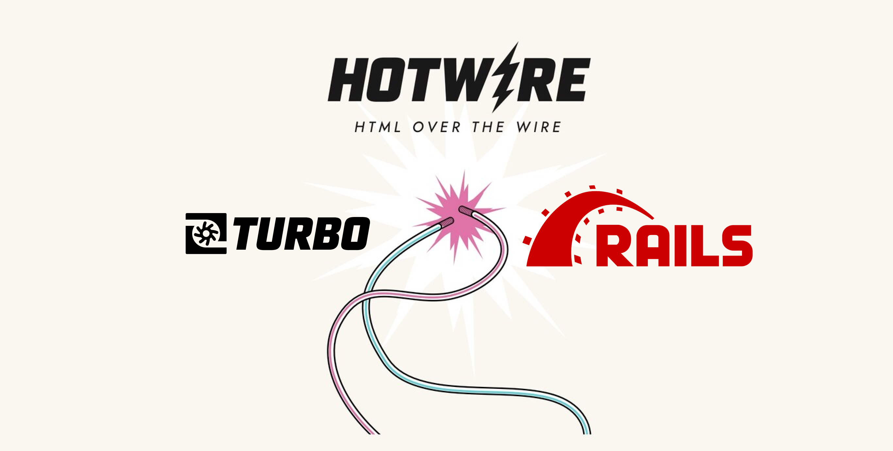

Me
Me
- Egresado de Codeable, 2do Cohort
- Software Engineer en Able
- Ruby on Rails y React
- 6 años de experiencia con Elixir
- Side-Projects y trabajos freelancer
- I ❤️ elixir
Ruby
Ruby

Elixir
Elixir

Ruby -> Elixir
Ruby -> Elixir
Syntax
Syntax
[
"Jose Valim",
"Chris McCord"
].each do |alchemist|
puts "#{alchemist} say Hello!"
end
[
"Jose Valim",
"Chris McCord"
]
|> Enum.each(fn alchemist ->
IO.puts("#{alchemist} say Hello!")
end)
Testing and Tooling
Testing and Tooling
- minitest/rspec -> ExUnit
- bundler -> mix
- rake -> mix
Rails -> Phoenix
Rails -> Phoenix
- MVC
- Router
- Channels
Phoenix Channels
Phoenix Channels
Erlang thinks that the web browser is just another Erlang process, which simplifies our programming model, putting everithing into the same conceptual framework.1
– Joe Armstrong
Elixir -> Ruby
Elixir -> Ruby
Phoenix -> Rails
Phoenix -> Rails

Pattern Matching (Since 2.7 )
Pattern Matching (Since 2.7 )
person = {
name: "Albert Castellano",
nickname: "Amiguito"
}
person => {name:, task:} # Inline pattern matching is experimental
# v2.7 job in {name:, task:}
# v3 job => {name:, task:}
puts "#{name} have the nickname #{nickname}"
Pattern Matching
Pattern Matching
job1 = {attempts: 1, name: "Albert", task: "make Elixir cool"}
job2 = {attempts: 4, name: "Albert", task: "make Ruby cool"}
def process_job(job)
case job
in name:, task:, attempts: attempts if attempts > 2
puts "Too many attempts. #{name} can not #{task}"
in name:, task:, attempts:
puts "#{name} has attemped to #{task} #{attempts} time(s)"
end
end
process_job(job1)
process_job(job2)
Pipelines in Elixir
Pipelines in Elixir
swapcase = fn (l) ->
case String.upcase(l) do
^l ->
String.downcase(l)
_ ->
String.upcase(l)
end
end
"Tech Talks"
|> String.split("")
|> Enum.map(swapcase)
|> Enum.join
|> String.split()
|> Enum.reverse()
|> Enum.join(" ")
|> IO.puts
Pipelines with then
Pipelines with then
"Tech Talks"
.then {|phrase| phrase.split("")}
.then {|list| list.map {|char| char.swapcase}}
.then {|list| list.join}
.then {|phrase| phrase.split}
.then {|list| list.reverse}
.then {|list| list.join(" ") }
.then {|phrase| puts phrase}
Pipelines with then (functional composition)
Pipelines with then (functional composition)
def split_in_char(phrase) = phrase.split("")
def swapcase(list) = list.map {|char| char.swapcase}
def join_chars(chars) = chars.join
def split_phrase(phrase) = phrase.split
def reverse_list(list) = list.reverse
def join_words(words) = words.join(" ")
def print_result(result) = puts(result)
(
method(:split_in_char) \
>> method(:swapcase) \
>> method(:join_chars) \
>> method(:split_phrase) \
>> method(:reverse_list) \
>> method(:join_words) \
>> method(:print_result)
).call("Tech Talks")
Concurrencia y paralelismo
Concurrencia y paralelismo
Ruby
Ruby Status for a long time
Ruby Status for a long time
Servers are Cheap, Devs are expensive
Happy Devs over performance code
Ractor
Ractor
Ractor
Ractor
Isolated process. Runs in parallel
Etc.nprocessors.times do
Ractor.new do
loop do
rand(100000000)
end
end
end
Ractor message passing
Ractor message passing
Mailbox
ractor = Ractor.new(Ractor.current) do |current| number = Ractor.receive current.send(number * number) end ractor.send(10) p Ractor.receive
Demo
Demo
Ractor y data inmutable
Ractor y data inmutable
Some problems
Copied data
Copied data
## Use this example in irb msg = 'Hello' p msg.object_id Ractor.new(msg) do |m| p m.object_id end sleep(0.5) # Only if needed if running the code as script
Moved data
Moved data
## Use this example in irb msg = 'Hello' ractor = Ractor.new do p receive end ractor.send(msg, move: true) sleep(0.5) # Only if needed if running the code as script puts msg.inspect #can not send any methods to a moved object (Ractor::MovedError
Sharable data
Sharable data
me = Ractor.make_shareable({name: "Albert", nickname: "Amiguito"})
p me.object_id
Ractor.new(me) do |m|
p m.object_id
end
sleep(0.5) # Only if needed if running the code as script
Sharable data
Sharable data
User = Struct.new(:name, :language)
me = Ractor.make_shareable(User.new('Steven', %w[Ruby Elixir]))
p me.object_id
Ractor.new(me) do |user|
p user.object_id
end
me.language.push('PHP') # can't modify frozen Array: ["Ruby", "Elixir"] (FrozenError)
Sharable data
Sharable data
require 'prime'
p Prime.prime?(2)
Ractor.new { Prime.prime?(2) }
sleep(0.5) # Only if needed if running the code as Script
Sharable data
Sharable data
class C
class << self
attr_accessor :tricky
end
end
C.tricky = 'test'
Ractor.new(C) do |cls|
p "I see #{cls}"
p "I can't see #{cls.tricky}"
end
sleep(0.5) # Only if needed if running the code as Script
Thank You ʕ•ᴥ•ʔ